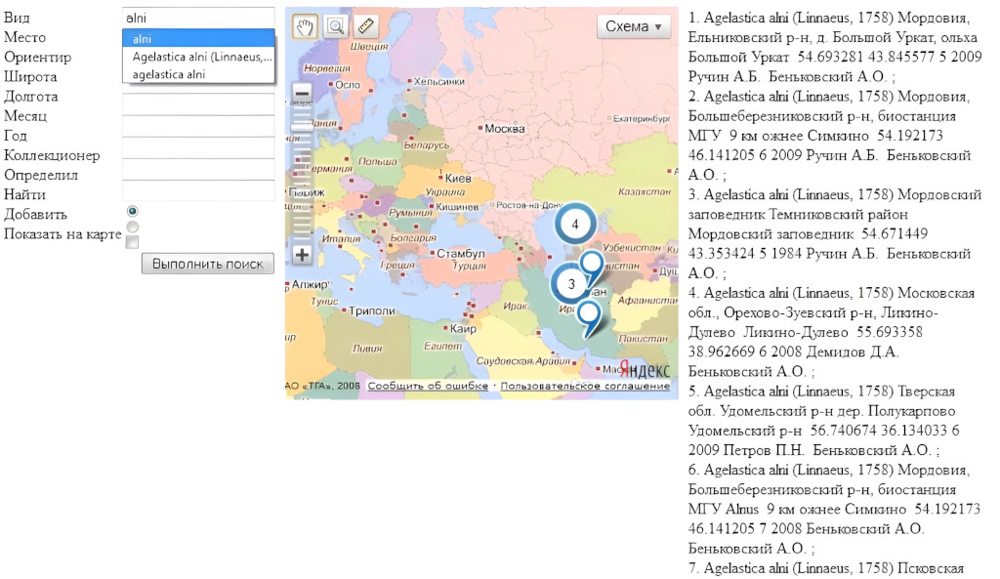

Максим Богомолов
Начинающий разработчик и дата аналитик
Опыт
-
2014 год - фриланс.
В сотрудничестве с аспирантом исторического факультета МГУ разработал программу на Visual Basics for Applications для построения графа родственных связей в крестьянском мире XVIII века на основе данных в таблице Excel. Результаты опубликованы1,2 в научных журналах.
-
2019 год. ООО "Гео-Альянс" - ГИС-инженер
Работал с геоинформационными системами, данными дистанционного зондирования Земли, спутниковыми снимками в QGIS, ArcGis.
-
2021 год - БФ "Центр охраны дикой природы".
Дополнил данные заказчика по участникам всероссийской акции "Марш парков". Разработал интерактивную карту участников акции на основе Google Maps.
-
2020-2023 - Московское областное отделение Всероссийского общества охраны памятников истории и культуры.
- Проанализировал существующие и спроектировал новые границы особо охраняемой природнй территории "Масловская лесная дача".
- Составил базы данных по объектам культурного наследия, биологическому разнообразия на основе открытых источников, особо охраняемым природным территориям в ближнем западном Помдосковье.
- Проанализировал проекты документов территориального планирования Одинцовского городского округа Московской области с использованием геоинформационных систем и Excel. Сформулированные предложения по корректировке функциональных зон и градостроительных регламентов были частично учтены в итоговых документах.
- С 2022 года администрирую сайт Дружины охраны природы МГУ на Wordpress. Сделал базовую настройку шаблона сайта (добавил слайдер и прочие мелочи). Сделал интерактивную карту особо охраняемых природных территорий Московской области на Leaflet.
- 2022 год. ВНИИ "Экология" - специалист отдела особо охраняемых природных территорий. Использовал геоинформационные системы для проектирования национальных парков и заповедников.
Образование
- 2011-2015. Московский педагогический государственный университет, Институт биологии и химии. Педагогическое образование (бакалавриат).
- 2015-2017. Московский педагогический государственный университет, Институт биологии и химии. Экология (магистратура).
- Свободно читаю, перевожу (без переводчика) и немного говорю на английском.
Дополнительное образование
 HuggingFace NlP course
HuggingFace NlP course- Курсы на
Ключевые навыки
- Python: синхронное, асинхронное программирование. Библиотеки scrapy, beautifulSoup, asyncio. Немного pandas, pytorch, tensorflow, keras, transformers, numpy, sklearn, matplot;
- HTML, CSS, Javascript;
- Pascal, Delphi;
- Visual Studio Code;
- Excel;
- Rest API;
- Ubuntu;
- Геоинформационные системы: QGIS, ArcGIS.
Обо мне
- Больше 10 лет занимиаюсь волонтёрской и общественной деятельностью, направленной на сохранение благоприятной окружающей среды. Всё больше понимаю, что без помощи информационных технологий достичь этой цели нельзя, поэтому решил развиваться в этом направлении. Надеюсь стать частью команды, соблюдающей принципы устойчивого развития.
- Первый свой скрипт на Python написал 25 января 2023 назад для постраничного экспорта PDF-файла в отдельные изображения. В течение следующего месяца я написал скрипт для парсинга сайтов сначала с помощью scrapy, затем asyncio и beautifulSoup с сохранением результатов сразу в Zip файл, сделал fine-tuning модели Bert для классификации связанных и несвязанных фрагментов текста, завёл аккаунт на Yandex Datasphere, освоился с Postman, написал скрипт для отправки заранее подготовленных запросов к API Yandex GPT, завёл аккаунт на GitHub, начал работать с GIT.
- В последние полгода установил Ubuntu для лучшей утилизации GPU (у меня AMD Radeon 6600M) в нейросетях (StableDiffusion и разные LLM), но также использую GPU на Windows с поомщью DirectML.
- Сейчас активно развиваю свои знания и навыки в HTML, CSS, Javascript, CLI и других языках программирования на Хекслет и других платформах.
С 10 лет самостоятельно изучал разные языки программирования, ещё до массового распространения интернета. Изучил по самоучителям Pascal, C++, познакомился с ассемблером. Не имея какой-либо доступной литературы в то время, разбирал код HTML, Delphi.
Во время учёбы в вузе (2012 год) сделал на локальном компьютере интерактивную карту с помощью API Яндекс.Карт с использованием Javascript, PHP и MySQL на основе базы данных по насекомым с кластеризацией близко расположенных меток.
Скриншот интерактивной карты распространения насекомых (семейство листоеды). Ещё в школе написал аналог Excel на Pascal с формулами. Программа позволяла совершать арифметические операции над числовыми значениями, хранящимися в виде строк; копировать значения ячеек и так далее.
Написал на Delphi несколько программ, моделирующих классическую механику: орбитальное движение звёзд и планет в трёхмерном пространстве с возможностью изменения угла и точки обзора; поведение упругих сеток под влиянием гравитации и других сил.
{kind=link}